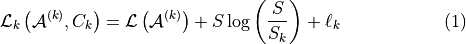
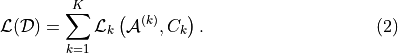
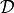
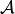
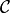

Clustering Network Populations
Tutorial
Code to perform clustering network populations derived in ‘Compressing network populations with modal networks reveals structural diversity’. Inputs an event dataset of the form [(edgesets, N, K0, n_fails, bipartite, directed, max_runs)], where:
edgesets: List of sets. The s-th set contains all the edges (i, j) in the s-th network in the sample (do not include the other direction (j, i) if the network is undirected). The order of edgesets within the dataset only matters for contiguous clustering, where we want the edgesets to be in the order of the samples in time.
N: Number of nodes in each network.
K0: Initial number of clusters (for discontiguous clustering, usually K0 = 1 works well; for contiguous clustering, it does not matter).
n_fails: Number of failed reassign/merge/split/merge-split moves before terminating the algorithm.
bipartite: ‘None’ for unipartite network populations, array [(# of nodes of type 1, # of nodes of type 2)] otherwise.
directed: Set to True when sets of edges input are directed.
max_runs: Maximum number of allowed moves, independent of the number of failed moves.
Outputs a clustering result of the form [(C, A, L)], where:
C: Dictionary with items (cluster label):(set of indices corresponding to networks in the cluster).
A: Dictionary with items (cluster label):(set of edges corresponding to the mode of the cluster).
L: Inverse compression ratio, which is the description length after clustering divided by the description length of naive transmission.
using the following clustering objective:


This method optimizes the Minimum Description Length (MDL) objective for clustering network populations.
Equation (2) gives the total description length of the data  under our multi-part transmission scheme. By minimizing this objective function we identify the best configurations of modes  and clusters . A good configuration  will allow us to transmit a large portion of the information in through the modes alone. If we use too many modes, the description length will increase as these are costly to communicate in full. And if we use too few, the description length will also increase because we will have to send lengthy messages describing how mismatched networks and modes differ. Hence, through the principle of parsimony, Eq.
will allow us to transmit a large portion of the information in through the modes alone. If we use too many modes, the description length will increase as these are costly to communicate in full. And if we use too few, the description length will also increase because we will have to send lengthy messages describing how mismatched networks and modes differ. Hence, through the principle of parsimony, Eq. (2) favors descriptions with the number of clusters  as small as possible but not smaller.
as small as possible but not smaller.
Inputs:
edgesets: list of sets. The s-th set contains all the edges (i, j) in the s-th network in the sample (do not include the other direction (j, i) if the network is undirected). The order of edgesets within D only matters for contiguous clustering, where we want the edgesets to be in order of the samples in time.
N: number of nodes in each network
K0: initial number of clusters (for discontiguous clustering, usually K0 = 1 works well; for contiguous clustering it does not matter)
n_fails: number of failed reassign/merge/split/merge-split moves before terminating the algorithm
bipartite: ‘None’ for unipartite network populations, array [# of nodes of type 1, # of nodes of type 2] otherwise
directed: Set to True when sets of edges input are directed
max_runs: Maximum number of allowed moves, independent of number of failed moves
Outputs of ‘run_sims’ (unconstrained description length optimization) and ‘dynamic_contiguous’ (restriction to contiguous clusters):
C: dictionary with items (cluster label):(set of indices corresponding to networks in cluster)
A: dictionary with items (cluster label):(set of edges corresponding to mode of cluster)
L: inverse compression ratio (description length after clustering)/(description length of naive transmission)
For discontiguous clustering, use:
MDLobj = MDL_populations(edgesets, N, K0, n_fails, bipartite, directed, max_runs)
MDLobj.initialize_clusters()
C, A, L = MDLobj.run_sims()
For contiguous clustering, use:
MDLobj = MDL_populations(edgesets, N, K0=(anything), n_fails=(anything), bipartite, directed)
C, A, L = MDLobj.dynamic_contiguous()
If you use this algorithm, please cite:
Kirkley, A. Rojas, M. Rosvall, and J-G. Young, Compressing network populations with modal networks reveals structural diversity. Communications Physics 6, 148 (2023).
MDL Population Clustering
This module contains the code for the MDL (Minimum Description Length) population clustering algorithm.
Functions
All of the following functions are provided in this module and have the same general usage as described below.
Function |
Description |
|---|---|
Generate synthetic networks from the heterogeneous population model. |
|
Convert index to edge indices. |
|
Remap dict keys to first K integers. |
|
Initialize the MDL_populations class. |
|
Initialize K0 random clusters and find their modes as well as the total description length of this configuration. |
|
Generate random key for new cluster. |
|
Compute the logarithm of the binomial coefficient. |
|
Compute the logarithm of the multinomial coefficient. |
|
Tally edge counts for networks in the cluster. |
|
Generate mode from cluster edge counts by greedily removing least common edges in the cluster. |
|
Compute cluster description length as a function of mode, edge counts, and size of the cluster. |
|
Reassign randomly chosen network to the best cluster. |
|
Merge two randomly chosen clusters. |
|
Split randomly chosen cluster in two and perform K-means type algorithm to get these clusters and modes. |
|
Merge two randomly chosen clusters then split them. |
|
Run discontiguous (unconstrained) merge split simulations to identify modes and clusters that minimize the description length. |
|
Minimize description length while constraining clusters to be contiguous in time. |
|
MDL_populations.evaluate_partition(partition, contiguous=False) |
Evaluate description length of partition. |
Reference
Description: Generate synthetic networks from the heterogeneous population model.
Parameters:
- S: Number of synthetic networks to generate.
- N: Number of nodes in each network.
- modes: List of modes for the population model.
- alphas: List of probabilities for true positive edges in each mode.
- betas: List of probabilities for false positive edges in each mode.
- pis: List of probabilities for each mode.
- Returns:
nets: List of generated networks.
cluster_labels: List of cluster labels for the generated networks.
Description: Convert index to edge indices.
Parameters:
- ind: Index of the edge.
- N: Number of nodes in the network.
- Returns:
tuple: Edge indices (i, j).
Description: Remap dict keys to first K integers.
Parameters:
- Dict: Dictionary to remap.
- Returns:
Dict: Remapped dictionary.
Description: Initialize the MDL_populations class.
Parameters:
- edgesets: List of sets. The s-th set contains all the edges (i, j) in the s-th network in the sample (do not include the other direction (j, i) if the network is undirected).
- N: Number of nodes in each network.
- K0: Initial number of clusters (for discontiguous clustering, usually K0 = 1 works well; for contiguous clustering, it does not matter).
- n_fails: Number of failed reassign/merge/split/merge-split moves before terminating the algorithm.
- bipartite: 'None' for unipartite network populations, array [# of nodes of type 1, # of nodes of type 2] otherwise.
- directed: Boolean indicating whether edgesets contain directed edges.
- max_runs: Maximum number of allowed moves, regardless of the number of fails.
Description: Initialize K0 random clusters and find their modes as well as the total description length of this configuration.
Description: Generate random key for new cluster.
Description: Compute the logarithm of the binomial coefficient.
Parameters:
- N: Total number of items.
- K: Number of chosen items.
- Returns:
float: Logarithm of the binomial coefficient.
Description: Compute the logarithm of the multinomial coefficient with the denominator Ns[0]!Ns[1]!….
Parameters:
- Ns: List of counts for the multinomial coefficient.
- Returns:
float: Logarithm of the multinomial coefficient.
Description: Tally edge counts for networks in the cluster.
Parameters:
- cluster: Set of network indices in the cluster.
- Returns:
Ek: Dictionary of edge counts for the cluster.
Description: Generate mode from cluster edge counts by greedily removing least common edges in the cluster.
Parameters:
- Ek: Dictionary of edge counts for the cluster.
- Sk: Size of the cluster.
- Returns:
Ak: Set of edges corresponding to the mode of the cluster.
Description: Compute cluster description length as a function of mode, edge counts, and size of the cluster.
Parameters:
- Ak: Set of edges corresponding to the mode of the cluster.
- Ek: Dictionary of edge counts for the cluster.
- Sk: Size of the cluster.
- Returns:
float: Cluster description length.
Description: Reassign randomly chosen network to the best cluster.
Parameters:
- k: Cluster index (optional).
- Returns:
bool: Whether the move was accepted.
float: Change in description length.
Description: Merge two randomly chosen clusters.
- Returns:
bool: Whether the move was accepted.
float: Change in description length.
Description: Split randomly chosen cluster in two and perform K-means type algorithm to get these clusters and modes.
- Returns:
bool: Whether the move was accepted.
float: Change in description length.
Description: Merge two randomly chosen clusters then split them.
- Returns:
bool: Whether the move was accepted.
float: Change in description length.
Description: Run discontiguous (unconstrained) merge split simulations to identify modes and clusters that minimize the description length.
- Returns:
C: Dictionary with items (cluster label):(set of indices corresponding to networks in the cluster).
A: Dictionary with items (cluster label):(set of edges corresponding to the mode of the cluster).
L: Inverse compression ratio (description length after clustering)/(description length of naive transmission).
Description: Minimize description length while constraining clusters to be contiguous in time.
- Returns:
C: Dictionary with items (cluster label):(set of indices corresponding to networks in the cluster).
A: Dictionary with items (cluster label):(set of edges corresponding to the mode of the cluster).
L: Inverse compression ratio (description length after clustering)/(description length of naive transmission).
Description: Evaluate description length of partition. Contiguous option removes cluster label entropy term from description length.
Parameters:
- partition: List of cluster labels for each network.
- contiguous: Boolean indicating whether to remove cluster label entropy term.
- Returns:
float: Description length of the partition.
Demo
Example Code
Step 1: Import necessary libraries
import numpy as np
import matplotlib.pyplot as plt
import time
import ScholarCodeCollective as SCC
from ScholarCodeCollective.MDL_network_population_clustering_main import generate_synthetic, MDL_populations
import networkx as nx
import random
Step 2: Function to visualize synthetic clusters
def visualize_synthetic_clusters(nets, cluster_labels, node_num):
num_plots = len(nets)
cols = 3
rows = (num_plots // cols) + (num_plots % cols > 0)
fig, axes = plt.subplots(rows, cols, figsize=(15, 10))
pos_rectangular = {}
half_N = (node_num + 1) // 2
for i in range(node_num):
if i < half_N:
pos_rectangular[i] = (i, 1)
else:
pos_rectangular[i] = (i - half_N, 0)
for i, (net, cluster_label) in enumerate(zip(nets, cluster_labels)):
row, col = divmod(i, cols)
ax = axes[row, col] if rows > 1 else axes[col]
G = nx.Graph()
G.add_nodes_from(range(node_num))
G.add_edges_from(net)
nx.draw(G, pos_rectangular, with_labels=True, ax=ax, node_size=300, node_color='skyblue', font_weight='bold')
ax.set_title(f'Network {i+1} (Mode {cluster_label})')
for j in range(i + 1, rows * cols):
fig.delaxes(axes.flatten()[j])
plt.tight_layout()
plt.savefig('synthetic_network_clusters.png', bbox_inches='tight', dpi=200)
plt.show()
Step 3: Generate synthetic data
mode_example = [{(0, 1), (0, 4), (0, 5), (1, 4), (1, 5), (1, 2), (3, 7), (6, 7)},
{(0, 1), (0, 4), (1, 2), (1, 5), (1, 6), (2, 5), (2, 6), (2, 3), (5, 6)},
{(1, 5), (4, 5), (5, 6), (2, 3), (2, 6), (3, 6), (3, 7), (2, 7), (6, 7)}]
node_num = 8
network_num = 2000
nets, cluster_labels = generate_synthetic(
S=network_num,
N=node_num,
modes=mode_example,
alphas=[1, 1, 1],
betas=[0.1, 0.1, 0.1],
pis=[0.33, 0.33, 0.34]
)
Step 4: Visualize the synthetic networks
visualize_synthetic_clusters(nets, cluster_labels, node_num)
Step 5: Run the MDL populations algorithm
mdl_pop = MDL_populations(edgesets=nets, N=node_num, K0=1, n_fails=100, directed=False, max_runs=np.inf)
mdl_pop.initialize_clusters()
clusters, modes, L = mdl_pop.run_sims()
Step 6: Function to visualize clustered networks
def visualize_clusters(nets, clusters, L, N, network_num, filename='MDL_population_clusters.png'):
num_clusters = len(clusters)
fig, ax = plt.subplots(1, num_clusters, figsize=(15, 8))
if num_clusters == 1:
ax = [ax]
pos_rectangular = {}
half_N = (N + 1) // 2
for i in range(N):
if i < half_N:
pos_rectangular[i] = (i, 1)
else:
pos_rectangular[i] = (i - half_N, 0)
for i, (k, v) in enumerate(clusters.items()):
G = nx.Graph()
G.add_nodes_from(range(N))
for idx in v:
G.add_edges_from(nets[idx])
degrees = dict(G.degree())
max_degree = max(degrees.values()) if degrees else 1
node_sizes = [100 + 400 * degrees[node] / max_degree for node in G.nodes()]
nx.draw(G, pos_rectangular, ax=ax[i], with_labels=True, node_size=node_sizes, node_color='skyblue', font_size=8, font_weight='bold', edge_color='black', width=1.5)
num_networks = len(v)
ax[i].set_title(f'Cluster {k}: {num_networks} networks, modes', fontsize=10)
ax[i].axis('off')
plt.suptitle(f'{network_num} Sythetic Networks, Inverse Compression Ratio: {L:.3f}', fontsize=12)
plt.tight_layout(rect=[0, 0.03, 1, 0.95])
plt.savefig(filename, bbox_inches='tight', dpi=200)
plt.show()
Step 7: Visualize the clustered networks
visualize_clusters(nets, clusters, L, node_num, network_num)
Example Output
Part of 2,000 Synthetic Networks with Cluster Labels. Each network is plotted with nodes colored light blue and labeled. The networks are arranged in a rectangular layout, with the title indicating the network number and its mode.
MDL Population Clustering Results for Synthetic Networks. Each cluster is represented by a subplot, with nodes colored light blue. The title of each subplot includes the cluster number and the number of networks in that cluster. The overall title indicates the total number of synthetic networks and the inverse compression ratio (L).
Paper source
If you use this algorithm in your work, please cite:
A. Kirkley*, A. Rojas, M. Rosvall, and J-G. Young, Compressing network populations with modal networks reveals structural diversity. Communications Physics 6, 148 (2023). Paper: https://arxiv.org/abs/2209.13827